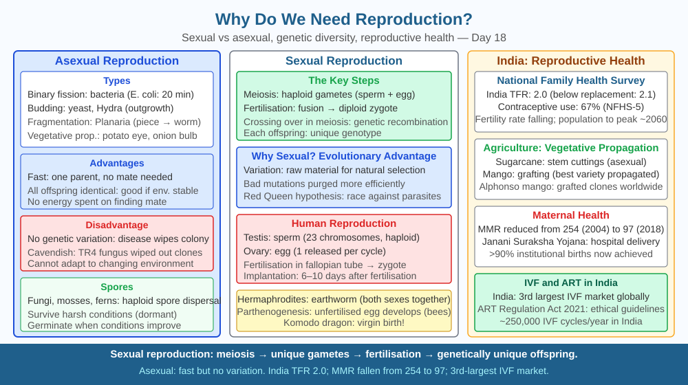

By the end of this lesson, you should be able to distinguish asexual from sexual reproduction with named mechanisms, explain why sexual reproduction produces genetic variation while asexual does not, and predict what would happen to a species if all its members became infertile.
Every individual organism alive today will die. Cells wear out. DNA accumulates damage. Even the healthiest animal has a finite lifespan. Yet life on Earth has continued without interruption for approximately 3.8 billion years. How? The answer is reproduction — the only biological process that creates new individuals to replace those that die. But here is the puzzle: bacteria can copy themselves in 20 minutes using just one parent, yet most animals insist on the far more complicated business of finding a mate, merging two different sets of DNA, and producing offspring that are similar to — but not identical to — either parent. Why did evolution favour this slower, costlier strategy?
Reproduction is the biological process by which organisms produce new individuals of the same species. It is the mechanism that prevents a species from going extinct when its members die. There are two fundamental modes.
Asexual reproduction involves a single parent and produces offspring that are genetically identical clones of that parent. The mechanisms vary by organism:
Advantages of asexual reproduction: only one parent needed (no mate search), faster, energetically cheaper, entire population can reproduce, offspring are well-adapted to the current environment (identical to parent which survived).
Sexual reproduction involves two parents, each contributing one set of chromosomes through gametes — specialised sex cells. In humans and most animals, gametes are produced by meiosis: a two-stage cell division that halves the chromosome number (from 46 to 23 in humans) and generates genetic variation through two mechanisms: 1. Crossing over: During meiosis I, homologous chromosomes exchange segments, shuffling allele combinations. 2. Independent assortment: Homologous chromosome pairs separate randomly, so each gamete gets a different combination of maternal and paternal chromosomes. The number of possible combinations for a human gamete is 2²³ — over 8 million.
When a sperm (23 chromosomes) fertilises an egg (23 chromosomes), the resulting zygote has 46 chromosomes — a unique combination never seen before. Each offspring is genetically distinct from both parents and from every sibling.
Why does variation matter? Consider a disease that sweeps through a population. In an asexual population (all genetically identical), if the pathogen can infect one individual, it can infect all of them — the entire population may be wiped out. In a sexually reproducing population, some individuals may carry alleles that confer resistance. Those individuals survive, reproduce, and pass on the resistance. Sexual reproduction continuously generates the raw material on which natural selection acts.
The cost-benefit trade-off:
| Feature | Asexual | Sexual |
|---|---|---|
| Parents needed | 1 | 2 |
| Speed | Fast | Slower |
| Genetic variation | None (clones) | High |
| Adaptation to change | Poor | Good |
| Energy cost | Low | High |
Asexual reproduction wins when the environment is stable and predictable. Sexual reproduction wins when the environment changes — pathogens evolve, climate shifts, new competitors arrive.
Without reproduction, extinction is inevitable. Every member of a species will eventually die. If no new individuals are produced before the last member dies, the species ceases to exist. The dodo (Raphus cucullatus) went extinct in the late 17th century not because all individuals died at once, but because the death rate exceeded the birth rate until none remained.
Think of a species as a relay race. Each runner (individual) carries the baton (genetic information) for a fixed distance (lifespan), then must hand it off to the next runner (offspring). If no new runner is ready, the baton drops — the species ends.
The key insight: reproduction is not optional for a species. It is the only mechanism that generates new individuals to replace those lost to death. Variation from sexual reproduction is the raw material for adaptation and long-term survival.
The included SVG shows two parallel tracks. The left track illustrates asexual reproduction: one parent bacterium divides into two identical daughters, each identical to the parent (shown by matching colours). The right track shows sexual reproduction: a sperm and egg (each carrying a half-set of chromosomes shown as coloured bars) fuse to form a zygote with a new combination of colours representing a unique genome. Below, a third panel shows a bar graph comparing speed vs. variation for the two modes. An inset shows a Bryophyllum leaf with plantlets forming at the margins, labelled as vegetative propagation.

The Indian honeybee (Apis cerana indica) colony has one queen, thousands of female workers, and a few hundred male drones. The queen lays two types of eggs: fertilised eggs (which develop into workers and new queens) and unfertilised eggs (which develop into drones by a process called parthenogenesis — a form of asexual reproduction). Drones therefore have only one set of chromosomes.
Predict: Worker bees are all daughters of the queen and are genetically related to each other. If a pathogen evolved that could infect one worker, what does the mechanism of asexual-vs-sexual reproduction predict about how quickly it could spread through the worker population? Now predict: why does the queen's ability to produce variation through sexual reproduction (fertilised eggs → new queens) matter for the long-term survival of the colony even when parthenogenesis produces drones faster?
What is the primary biological purpose of reproduction?
Correct answer: b
Why is understanding reproductive mechanisms more useful than just knowing species reproduce?
Correct answer: a
What would happen to a species if all its members became infertile?
Correct answer: b
Explain today's concept to a younger student in 60 seconds without technical jargon. Then explain it again using the correct scientific vocabulary.
If both explanations describe the same mechanism, you have understood the concept rather than memorised it.
There is a species of whiptail lizard (Aspidoscelis uniparens) in North America that is entirely female — no males exist in the species. Every individual reproduces by parthenogenesis, producing clones. Yet these lizards still perform courtship behaviour with each other, taking turns in male and female roles. This social behaviour appears to trigger hormonal changes that stimulate egg production — the species "needs" the ritual even though it no longer needs a male. This is evolution caught mid-transition: the behaviour evolved when sexual reproduction was still happening, and has not yet been lost even though the underlying sex is gone.
Reproduction is the only mechanism that generates new individuals to replace those that die; asexual reproduction is fast but produces clones with no variation, while sexual reproduction through meiosis and fertilisation generates genetic variation that enables species to adapt to changing environments — and without any reproduction at all, a species becomes extinct the moment its last individual dies.